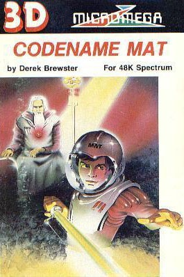
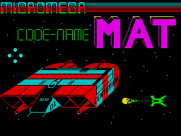
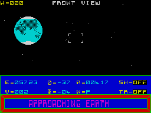

Codename MAT


{kind=link}

| Publisher: | Micromega |
| Price: | £6.95 |
| Year: | 1984 |
| Source: | CRASH, Issue 4 |

‘Mission: Alien termination — the desperate plan to place in the mind of a teenager the combined tactical skills of all the planetary leaders in the solar system. MAT is mankind’s last hope... Now your mind is Mat’s mind. Take control of the Centurion and blast off on the greatest adventure of all...’
Inlay cards usually leave something to be desired when describing a computer game, but considering the scope of Code-Name Mat, Micromega’s is almost terse. For decades the Myons have sought to dominate the Solar system and they have launched an all-out attack, knowing that Earth has developed a revolutionary new space craft. Unfortunately there is only the prototype USS Centurion, and you as Mat are in command.

How to describe the game? As we said in our preview feature last issue, a starting point might be Star Trek games, but only as a convenient departure point, for Code-Name Mat has gone boldly further, resulting in a game of arcade action combined with real simulation which calls for a number of different skills. In brief: The Myons are attacking Earth, starting from the outermost planets of the solar system. This divides the game up effectively into sectors which equate with the planets Pluto, Neptune, Uranus, Saturn, Jupiter, Mars and Earth. The Myons tend to attack a planet and attempt to reduce it to rubble which will be used to increase the numbers of their attacking fleet. In the last event, it is better to destroy a planet yourself than to let it fall into Myon claws. The solar system is seen on the Solar Chart.
The second chart is the Sector Scan, a 10 x 7 grid which shows the position of the main planet, any satellite bodies like moons, positions of Myon fleet units, your own defence units (more later) and positions of stargates (red — outer system/cyan — inner system). Travel between sectors within a planetary system is done by means of a warp gate. A cursor can be moved to the desired sector and then the Centurion must be piloted (using the view screen) at the gate which will appear in front of the craft. Failure to achieve the transition will result in the Centurion ending up in some other sector. Travel between planetary systems is done by navigating through one of the two stargates in much the same way.
Long Range Scan is a 3D global representation of your area of space. The Centurion is seen as a dot at the centre. This is one of the most amazing aspects of the game, and one of the hardest to get to grips with. A craft disappearing behind you will reappear ahead. If you loop the loop the display will rotate vertically as if you were looking down through a revolving cylinder. To play well, you must master your scanner.

saving mankind from the Myon threat.
Instrumentation and its use is very critical, flying by the seat of your pants alone will not suffice. Instruments provided at the base of the view screen are Energy (basically a strength factor — when it reaches zero — you’re dead), Velocity, Angles from a tracked object both vertical and horizontal, Object range, Object number, Shield Status, Tracking Computer Status. When the Tracking Computer is on, it will automatically switch between a forward and reverse view from the ship to face any object being tracked, such as an enemy fighter, and you always fire in the selected direction. You are up against three types of enemy craft: Fighters, which will attack as soon as you enter an area containing one, Cruisers, will only attack when within a range of 3,000; Base Stars (nicknamed hamburgers), which will attack immediately. If their shields are worn down, hamburgers run away for two minutes until the shields are regenerated.
The Myon attack continues once the game has started quite independently of your actions, unless you stop them, of course, and it takes a great deal of skill to contain their movement through the solar system. Your instrumentation is vulnerable to damage, which can leave you blind, but parking in orbit around a planet will result in a drone coming up to meet you. This refuels and repairs all damage.
If you wish to play with full strategy options, then selecting the second mode, Commander, means that you are also in control of Planetary Defence Fleets. These can be moved about and used to help in the battle to great effect, opening up a whole new game. Fleets are communicated with via the Subspace Transmitter.
To describe fully the complexities of Code-Name Mat would take a volume, and this introduction only scratches the surface of the game.
CRITICISM
‘Although there are loads of keys and functions to get used to, you do find that they are all very useful, and it doesn’t mean that you can’t start to play immediately. The graphics have hit a new high for the Spectrum; they are extremely fast and you are given an amazingly realistic 3D view and they are varied as well. I like the way that even if you have lost your engines through enemy action, there is still a way of limping to a planet for repairs by keeping your finger on the thrust key. This causes the engines to “stutter”. The planets are all drawn very well, as are the drones that come to refuel the Centurion. This game is well balanced between strategy and arcade and there is a lot of interaction between computer and player. Forward planning plays a major part too. I don’t think I can find any way of telling people to buy this game that would be sufficiently adequate. Just buy it!’
‘First impressions of Code-Name Mat are terrifying. Not only are there a lot of screens to cope with, but also a lot of keys, although joysticks may be used. But despite appearances this turns out be to a user-friendly game and, despite its complexity, it isn’t one where you seem to get lost in space like so many other similar games. Mind you, I can’t think of another game to really compare it with. You might just have climbed into a space ship and hurtled skywards, it’s all so realistic. All the graphics are superb, and all the instrumentation is essential to successful playing. Perhaps the only “cheap” effect in the whole game is the stargate warp effect, with its flashing colours. The 3D is not only effective it’s also varied. The Long Range Scan is a really exciting development. Realism is even taken to the degree that when the forward view flicks to the rear, the keys, of course, alter their left/right function, which can be confusing at first. The depth of the game will ensure that it is played for a long time to come.’
‘Amazing 3D graphics! Enemy craft really do come from hundreds of miles away until they zoom over your shoulder. Only the planets are a bit jerky as you approach, but then, with so many of them and in such good detail, and only 48K that’s not surprising. It is obviously going to take a long time to plumb the intricacies of Code-Name Mat, and that means high addictivity, helped along by the exciting space battles and tremendous playability. If there’s anyone out there who doesn’t like this game, perhaps they should go back to Ludo.’
COMMENTS
| Control keys: | 6/7 left/right, 8/9 up/down, 0 fire: Engines: 1/2 decelerate/accelerate, 3 decelerate to full stop, go to cruising speed, 5 go to full speed (not available with cursor joysticks): W warp drive, D shields on/off, A tracker, T transmit subspace, F front view, R rear view, L long-range scan, S sector scan, C solar chart |
| Joystick: | AGF, Protek, Kempston, ZX 2 |
| Keyboard play: | Instantaneous |
| Use of colour: | Well used |
| Graphics: | Outstanding |
| Sound: | Continuous, well used |
| Skill levels: | 2 in effect, although they make for different games, and in addition there is a short game, full game with medium sized attack fleet, and full game with full-scale attack fleet |
| Lives: | As it should be — only 1! |
| General rating: | Out of this world! |
| Use of computer: | 88% |
| Graphics: | 95% |
| Playability: | 94% |
| Getting started: | 98% |
| Addictive qualities: | 92% |
| Value for money: | 93% |
| Overall: | 93% |